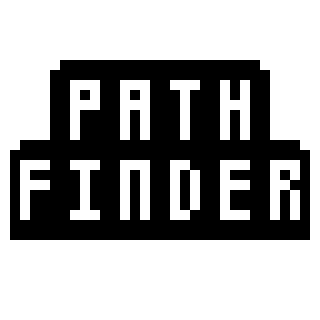

API Documentation |
|
|---|---|
| ROS Python API | ROS C++ API |

Caption: Team Pathfinder Icon
Team Pathfinder is a group of students from the Singapore Institute of Technology.
The team consists of five members: Paul Yong, Muhammad Syamim, Lim Jun Hao Derek, Joshua Ng, Bryan Sentoso.
This website is a personal project by the team to document our learning journey in Robotics Systems.
This website is being hosted on GitHub Pages.
For more information on GitHub Pages, click here
To view the source code for this website, click here